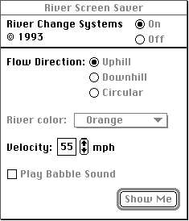

Writing a Control Panel Function
A control panel requires a control device ('cdev') code resource, which contains the code that implements the feature your control panel provides. The first piece of code in this resource must be a control device function that adheres to a defined interface. When the user opens your control panel, the Finder loads your code resource (of type'cdev') into memory.The Finder calls your control device function, requesting it to perform the action indicated by the
messageparameter, in response to events and the user's interaction with your control panel. Your control device function should perform the requested action and return a function result to the Finder. Your control device function should return as its function result either a standard value indicating that it has not allocated storage, a handle to any storage it has allocated, or an error code. Here is how you declare a control device function:FUNCTION MyCdev(message, item, numItems, CPrivateValue: Integer; VAR theEvent: EventRecord; cdevStorageValue: LongInt; CPDialog: DialogPtr): LongInt;Themessageparameter can contain any of the values defined by these constants:CONST macDev = 8; {determine whether control panel can run} initDev = 0; {perform initialization} hitDev = 1; {handle click in enabled item} updateDev = 4; {respond to update event} activDev = 5; {respond to activate event} deActivDev = 6; {respond to control panel becoming inactive} keyEvtDev = 7; {respond to key-down or auto-key event} undoDev = 9; {handle Undo command} cutDev = 10; {handle Cut command} copyDev = 11; {handle Copy command} pasteDev = 12; {handle Paste command} clearDev = 13; {handle Clear command} nulDev = 3; {respond to null event} closeDev = 2; {respond to user closing control panel}These constants (as specified in themessageparameter) indicate that your control device function should perform the following actions:The control device function that implements the River control panel used as an example in this chapter shows one way of handling messages from the Finder. In this scenario, the user sets the screen saver's characteristics using the River control panel. The River control panel (
macDev. Determine whether the control panel can run on the current system, and return a function result of 1 if it can and 0 if it cannot.initDev. Perform initialization.hitDev. Handle a click in an enabled item.updateDev. Update any user items and redraw any controls that are not standard dialog items handled by the Dialog Manager.activDev. Respond to your control panel becoming active by making the default button and any other controls in your control panel active.deActivDev. Respond to your control panel becoming inactive by making the default button and any other controls in your control panel inactive.keyEvtDev. Handle a key-down or auto-key event.undoDev. Handle an Undo command.cutDev. Handle a Cut command.copyDev. Handle a Copy command.pasteDev. Handle a Paste command.clearDev. Handle the Clear command.nulDev. Handle a null event by performing any idle processing.closeDev. Handle a click in the close box by terminating, after disposing of any handles and pointers created by your function.'cdev') file includes a system extension that displays the screen saver when the user signals it to do so. The River control panel uses the system extension to display the screen saver using the current settings whenever the user clicks the panel's default button (Show Me). (See Figure 8-6 on page 8-13.)The River control device function reads control settings from a resource stored in its preferences file, which is stored in the Preferences folder, and writes new values to that file at certain points after the user changes control settings. The control device function alerts the system extension of changes in the preferences file, and the system extension gets the new values to use from the preferences file.
In addition to the required resources, the River control device function uses a number of private resources that are included in the control panel file.
Listing 8-8 shows the River control panel's control device function, called
main. To respond to requests from the Finder, the function uses aCASEstatement that handles each type of message sent by the Finder.The remainder of this section discusses each of these messages in detail and includes code showing how the River control panel processes the messages.
Listing 8-8 A control device function
UNIT RiverCP; INTERFACE {include a Uses statement if your programming environment requires it} CONST kShowMe = 1; kOnRadButton = 3; kOffRadButton = 4; kUphillRadButton = 6; kDownhillRadButton = 7; kCircularRadButton = 8; kVelocityEditText = 10; kUserItemUpArrow = 11; kUserItemDownArrow = 12; kPict = 13; kUserItemButtonOutline = 15; kBabbleCheckBox = 16; kRiverColorMenu = 17; TYPE MyRiverStorage = RECORD err: LongInt; count: LongInt; settingsChanged: Boolean; END; MyRiverStoragePtr = ^MyRiverStorage; MyRiverStorageHndl = ^MyRiverStoragePtr; FUNCTION main (message, item, numItems, CPrivateValue: Integer; VAR theEvent: EventRecord; cdevStorageValue: LongInt; CPDialog: DialogPtr): LongInt; IMPLEMENTATION FUNCTION main; {any support routines used by your control panel function} VAR myRiverHndl: MyRiverStorageHndl; initDevOrMacDevMsg: Boolean; okToRun: LongInt; cpMemError: Boolean; BEGIN cpMemError := MyRoomToRun(message, cdevStorageValue); IF cpMemError THEN {an error occurred or there isn't enough memory } main := cdevMemErr { to run, return immediately} ELSE {handle the message} BEGIN IF (message <> macDev) AND (message <> initDev) THEN myRiverHndl := MyRiverStorageHndl(cdevStorageValue); CASE message OF macDev: {check machine characteristics} BEGIN MyCheckMachineCharacteristics(okToRun); main := okToRun; END; initDev:{perform initialization} MyInitializeCP(cdevStorageValue, CPDialog, myRiverHndl); hitDev: {user clicked dialog item} BEGIN item := item - numItems; MyHandleHitInDialogItem(item, cdevStorageValue, CPDialog, myRiverHndl); END; activDev: {control panel is becoming active} MyActivateControlPanel(cdevStorageValue, CPDialog, myRiverHndl, TRUE); deActivDev: {control panel is becoming inactive} MyActivateControlPanel(cdevStorageValue, CPDialog, myRiverHndl, FALSE); updateDev: {update event -- draw any user items} MyUpdateControlPanel(cdevStorageValue, CPDialog, myRiverHndl); cutDev, copyDev, pasteDev, clearDev: {editing command} MyHandleEditCommand(message, CPDialog); keyEvtDev: {keyboard-related event} MyHandleKeyEvent(theEvent, CPDialog, message); nulDev: {null event -- perform idle processing} MyHandleIdleProcessing(cdevStorageValue, CPDialog, myRiverHndl); closeDev: {user closed control panel, release memory before exiting} MyCloseControlPanel(myRiverHndl, cdevStorageValue); END; {of CASE} IF message <> macDev THEN main := LongInt(cdevStorageValue); END; {of handle message} END; {of main program} END.When the Finder first calls your control device function, the current resource file is set to your control panel ('cdev') file, the current graphics port is set to your control panel's dialog box, and the default volume is set to the System Folder of the current startup disk. Your control device function must preserve all of these settings.Although the Finder intercedes with the system software and performs services on behalf of your control device function, it is your control device function's responsibility to detect and, if possible, recover from any error conditions. To avoid a memory error condition, your function should ensure that enough memory is available to handle the message from the Finder. On entry, the
mainfunction calls itsMyRoomToRunprocedure to perform this check.The next sections describe how to handle each message passed in the
messageparameter.Determining If a Control Panel Can Run on the Current System
If you want your control device function to determine if your control panel can run on the current system, specify the values in your machine resource accordingly (see
Table 8-1 on page 8-21). In this case, the Finder calls your function for the first time with amacDevmessage. The Finder calls your control device function with amacDevmessage only once.In response to the
macDevmessage, your control device function can check the hardware configuration of the current system. As necessary, your control device function should determine which computer it is being run on, what hardware is connected, and what is installed in the slots, if there are slots. The application-definedMyCheckMachineCharacteristicsprocedure, used in Listing 8-8 on page 8-27, performs these checks for the River control panel. Your control device function should return either a 0 or a 1 as its function result in response to themacDevmessage. These values have specific meanings in response to amacDevmessage, and the Finder does not interpret them as error codes. If your control panel file can run on the current system, return a function result of 1; if your control panel file cannot run on it, return a function result of 0. If your function returns a result of 0, the Finder does not open your control panel; instead, it displays an alert box to the user.
- Note
- If your machine resource specifies that your control panel runs on all systems, or if the machine resource identifes the restrictions that apply to your control panel, the Finder does not call your control device function with a
macDevmessage.Initializing the Control Panel Items and Allocating Storage
If your control panel can run on the current system, the Finder calls your control device function and specifiesinitDevin themessageparameter. Except for amacDevmessage, your control device function should not process any other messages before it receives and successfully processes aninitDevmessage. In response to aninitDevmessage, your function should allocate any private storage it needs to implement its features, initialize the settings of controls in the control panel, and perform any other necessary initialization tasks.Because control panels cannot use normal global variables to retain information once the control device function returns, the interface between the Finder and the control device function provides a way to preserve memory that your control device function might allocate. If, for example, your control device function allocates memory to save data between calls, you return a handle to the allocated memory as the function result in response to the Finder's
initDevmessage. The next time it calls your function, the Finder passes this handle back as the value of thecdevStorageValueparameter. After sending aninitDevmessage, the Finder always passes to your function the function result previously returned as the value of thecdevStorageValueparameter. In this way, the Finder makes the handle available to your function, until your function returns an error code.When the Finder calls your function with the
initDevmessage, it passes the constantcdevUnsetin thecdevStorageValueparameter; this value indicates that your function has not allocated any memory. If you do not create a handle and allocate memory in response to theinitDevmessage, you should return this value (cdevUnset) as your function result. In this case, the Finder continues to pass this value to your control device function, and your function should continue to return this value until your control device function encounters an error.Before the Finder calls your function with an
initDevmessage, it has already drawn the dialog box and any items defined in your item list resource, except for user items. During initialization, you set the default value for any controls, and, if necessary, draw any user items. You can store the default values for controls in a resource located in a preferences file within the Preferences folder. To initially set the values for your panel's controls (such as radio buttons and checkboxes) and editable text, retrieve the default values from the resource and then use the Dialog Manager'sGetDialogItemprocedure and the Control Manager'sSetControlValueprocedure.The Finder calls QuickDraw to draw the static text for your control panel. QuickDraw uses the default application font for this purpose; for Roman scripts, this is 9-point Geneva. For System 7, you can include a font information (
'finf') resource in your control panel file to specify a font to be used for static text.For example, you can use a font information resource to specify 12-point Chicago, which is the recommended font for Roman scripts. You can also use an
'finf'resource to change the font of static text in control panels localized for other system scripts. If you include an'finf'resource, the Finder sets the font, font style, and font size for the graphics port to the values you specify and uses these values to draw any static text. See "Specifying the Font of Text in a Control Panel" on page 8-23 for more information.Listing 8-9 shows the
- Note
- The Control Manager uses the system font for text strings that are part of a control item.
MyInitializeCPprocedure, which the River control
device function calls to handle theinitDevmessage. This procedure calls theNewHandlefunction to create a handle to a record of typeMyRiverStorage(see Listing 8-8 on page 8-27). The procedure then initializes the fields of this record. It also calls its own procedure,MyGetUserPreferenceSettings, which reads a resource file containing the initial settings for the controls. This resource contains either the original default values or new values set by the user from the control panel.The
MyInitializeCPprocedure sets initial values for any controls in its control panel. For each control,MyInitializeCPcalls the Dialog Manager'sGetDialogItemprocedure to get a handle to the control and then calls the Control Manager'sSetControlValueprocedure to restore the last setting of the control. The first time a user uses the control panel, the initial values are the default values; after that, the initial values are those last set by the user. TheMyInitializeCPprocedure restores the last settings of radio buttons and checkboxes, sets the menu item to the last item chosen by the user in pop-up menus, and restores the text that the user last entered in editable text items.Finally, the
MyInitializeCPprocedure returns in thecdevStorageValueparameter a handle to the memory it has allocated. The control device function then returns this value as its function result. In all subsequent calls to the control device function, the Finder passes this value back in thecdevStorageValueparameter.The River control panel uses the memory it allocates to save values indicating that the user has changed a setting. When the user clicks the Show Me button or closes the control panel, the control device function notifies the River screen saver system extension that the settings have changed. The River screen saver then uses the new settings when it displays the river on the screen.
Listing 8-9 Initializing a control panel: Allocating memory and setting controls
PROCEDURE MyInitializeCP (VAR cdevStorageValue: LongInt; CPDialog: DialogPtr; VAR myRiverHndl: MyRiverStorageHndl); VAR initOnSetting, initOffSetting, initUphillSetting, initDownhillSetting, initCircularSetting, initBabbleSetting, initRiverColorSetting: Integer; initVelocityText: Str255; startSel, endSel: Integer; itemType: Integer; itemHandle: Handle; itemRect: Rect; BEGIN myRiverHndl := MyRiverStorageHndl(NewHandle(Sizeof(MyRiverStorage))); IF myRiverHndl <> NIL THEN BEGIN {initialize fields in myRiver record} myRiverHndl^^.count := 0; myRiverHndl^^.err := 0; myRiverHndl^^.settingsChanged := FALSE; END; {set default or saved values for each setting in this control panel-- } { usually a control panel reads these values from a resource file} MyGetUserPreferenceSettings(initOnSetting, initOffSetting, initUphillSetting, initDownhillSetting, initCircularSetting, initBabbleSetting, initRiverColorSetting, initVelocityText, startSel, endSel); {set the initial values of buttons and other controls using the Dialog } { Manager's GetDialogItem & the Control Mgr's SetControlValue procedures} GetDialogItem(CPDialog, kOnRadButton, itemType, itemHandle, itemRect); SetControlValue(ControlHandle(itemHandle), initOnSetting); GetDialogItem(CPDialog, kOffRadButton, itemType, itemHandle, itemRect); SetControlValue(ControlHandle(itemHandle), initOffSetting); GetDialogItem(CPDialog, kUphillRadButton, itemType, itemHandle, itemRect); SetControlValue(ControlHandle(itemHandle), initUphillSetting); GetDialogItem(CPDialog, kDownhillRadButton, itemType,itemHandle,itemRect); SetControlValue(ControlHandle(itemHandle), initDownhillSetting); GetDialogItem(CPDialog, kCircularRadButton, itemType,itemHandle,itemRect); SetControlValue(ControlHandle(itemHandle), initCircularSetting); GetDialogItem(CPDialog, kBabbleCheckBox, itemType, itemHandle, itemRect); SetControlValue(ControlHandle(itemHandle), initBabbleSetting); GetDialogItem(CPDialog, kRiverColorMenu, itemType, itemHandle, itemRect); SetControlValue(ControlHandle(itemHandle), initRiverColorSetting); GetDialogItem(CPDialog, kVelocityEditText, itemType, itemHandle,itemRect); SetDialogItemText(itemHandle, initVelocityText); SelectDialogItemText(CPDialog, kVelocityEditText, startSel, endSel); cdevStorageValue := Ord4(myRiverHndl); END;If you define your text items as user items, your control device function must draw the text in response to aninitDevmessage. See "Handling Text Defined as User Items" on page 8-43 for details.Responding to Activate Events
When a control panel is active, your control device function is responsible for making each control active or inactive, as appropriate. For example, your function should draw a bold outline around the control panel's default button. By contrast, when your control panel is inactive, your control device function should make all its controls inactive, causing the Control Manager to draw them in gray or in grayscale, depending on the bit depth of the monitor. This provides a visual indication to the user that a control panel is inactive, and it distinguishes the active window from inactive ones.Whenever the Event Manager generates an activate event for your control panel in response to a user action, the Finder intercepts the activate event and calls your control device function with either an
activDevmessage or adeActivDevmessage. In either case, the Finder passes to your function, in the parametertheEvent, the event record for the activate event and, in thecdevStorageValueparameter, a handle to the memory previously allocated by your function.For example, the Finder calls your control device function with an
activDevmessage (after sending aninitDevmessage) when the user opens your control panel or clicks your inactive control panel after using another control panel or an application. Your function should respond to anactivDevmessage by drawing a bold outline around the default button. It should also make the default button and any other controls in your control panel active. You can use the Control Manager'sHiliteControlprocedure to make a control active or inactive. (See the chapter "Control Manager" in Inside Macintosh: Macintosh Toolbox Essentials for information aboutHiliteControl.)In general, your function does not need to update user items in response to an activate event, apart from drawing a bold outline around the default button. If, however, your control panel includes a user item that requires updating, such as a clock that shows the current time, your control device function should update that user item.
The Finder calls your control device function with a
deActivDevmessage when the user clicks another control panel, runs an application, or otherwise brings another window to the front. In this case, your function should respond by drawing the outline of the default button in gray and making inactive any other controls in your control panel. While a control is inactive, the Control Manager does not respond to mouse events in it. See the chapter "Dialog Manager" in Inside Macintosh: Macintosh Toolbox Essentials for information on how to make buttons, radio buttons, checkboxes, and pop-up menus inactive and active in response to activate events. Figure 8-10 shows the River control panel when it is inactive. Note that all of its controls are dimmed.Figure 8-10 Example of an inactive control panel

The River control device function calls its own procedure to handle bothactivDevanddeActivDevmessages. Listing 8-10 shows theMyActivateControlPanelprocedure, which either makes the controls active in response to anactivDevmessage or inactive in response to adeActivDevmessage.In response to activate events, this procedure calls the Dialog Manager's
GetDialogItemprocedure to get a handle to the default button and then calls the Control Manager'sHiliteControlprocedure to make the control active. To draw the bold outline around the default button, theMyActivateControlPanelprocedure calls its own procedure,MyDrawDefaultButtonOutline. (See the chapter "Dialog Manager" in Inside Macintosh: Macintosh Toolbox Essentials for detailed instructions on drawing an outline around a default button.) The procedure then makes all other controls active.In response to a
deActivDevmessage, theMyActivateControlPanelprocedure makes all its controls inactive. In addition, it uses its own procedure,MyDrawDefaultButtonOutline, to draw a gray outline around the default button.Listing 8-10 Responding to an activate event
- Note
- If the dialog box uses a color graphics port, you can use the Color QuickDraw function
GetGrayto return a blended gray based on the foreground and background colors.PROCEDURE MyActivateControlPanel (VAR cdevStorageValue: LongInt; CPDialog: DialogPtr; myRiverHndl: MyRiverStorageHndl; activate: Boolean); VAR itemType: Integer; itemHandle: Handle; itemRect: Rect; BEGIN IF activate THEN BEGIN {control panel becoming active} {activate the default button (ShowMe) and draw bold outline around it} GetDialogItem(CPDialog, kShowMe, itemType, itemHandle, itemRect); HiliteControl(ControlHandle(itemHandle), 0); MyDrawDefaultButtonOutline(CPDialog, kShowMe); {make other controls active} GetDialogItem(CPDialog, kOnRadButton, itemType, itemHandle, itemRect); HiliteControl(ControlHandle(itemHandle), 0); GetDialogItem(CPDialog, kOffRadButton, itemType, itemHandle, itemRect); HiliteControl(ControlHandle(itemHandle), 0); GetDialogItem(CPDialog, kUphillRadButton,itemType,itemHandle,itemRect); HiliteControl(ControlHandle(itemHandle), 0); GetDialogItem(CPDialog, kDownhillRadButton, itemType, itemHandle, itemRect); HiliteControl(ControlHandle(itemHandle), 0); GetDialogItem(CPDialog, kCircularRadButton, itemType, itemHandle, itemRect); HiliteControl(ControlHandle(itemHandle), 0); GetDialogItem(CPDialog, kBabbleCheckBox, itemType, itemHandle, itemRect); HiliteControl(ControlHandle(itemHandle), 0); GetDialogItem(CPDialog, kRiverColorMenu, itemType, itemHandle, itemRect); HiliteControl(ControlHandle(itemHandle), 0); END ELSE BEGIN {control panel becoming inactive} {make the default button inactive and draw gray outline around it} GetDialogItem(CPDialog, kShowMe, itemType, itemHandle, itemRect); HiliteControl(ControlHandle(itemHandle), 255); MyDrawDefaultButtonOutline(CPDialog, kShowMe); {make other controls inactive} GetDialogItem(CPDialog, kOnRadButton, itemType, itemHandle, itemRect); HiliteControl(ControlHandle(itemHandle), 255); GetDialogItem(CPDialog, kOffRadButton, itemType, itemHandle, itemRect); HiliteControl(ControlHandle(itemHandle), 255); GetDialogItem(CPDialog,kUphillRadButton,itemType,itemHandle,itemRect); HiliteControl(ControlHandle(itemHandle), 255); GetDialogItem(CPDialog, kDownhillRadButton, itemType, itemHandle, itemRect); HiliteControl(ControlHandle(itemHandle), 255); GetDialogItem(CPDialog, kCircularRadButton, itemType, itemHandle, itemRect); HiliteControl(ControlHandle(itemHandle), 255); GetDialogItem(CPDialog,kBabbleCheckBox,itemType,itemHandle,itemRect); HiliteControl(ControlHandle(itemHandle), 255); GetDialogItem(CPDialog,kRiverColorMenu,itemType,itemHandle,itemRect); HiliteControl(ControlHandle(itemHandle), 255); END; END;
- Using Multiple Dialog Boxes
- The use of nested dialog boxes is not recommended in control panels. If you decide to use them nevertheless, keep in mind that the Finder may send your control device function a
deActivDevmessage before your code that displays and initializes the second dialog box completes. This is because when your control device function callsDialogSelectto handle an event in a second dialog box,DialogSelectissues a call toGetNextEvent. In turn, the system software sends to the Finder an activate event instructing it to deactivate the main control panel's dialog box. However, this situation should not cause unusual problems, and your code should handle thedeActivDevmessage, then continue its processing for the second dialog box.Responding to Keyboard Events
The Finder intercepts all key-down and auto-key events for your control panel. The Finder sends your control device function a keyboard event through thekeyEvtDevmessage for all keystrokes except Command-key equivalents. The Finder processes all Command-key equivalents on behalf of your control panel except those that it maps to its own Edit menu commands. The Finder converts these Command-key equivalents to messages and passes them on (ascutDev,copyDev,pasteDev,undoDev, andclearDevmessages) to your control panel for processing. (See "Handling Edit Menu Commands" on page 8-46 for more information.)In addition to handling Command-key equivalents, your control device function should respond appropriately when the user presses the Enter key or the Return key. In either case, your function should map the keypress to your control panel's default button, if any, and perform the action corresponding to that button. For instance, the
- Note
- In System 6, the Control Panel desk accessory does not convert Command-key equivalents for Edit menu commands to edit messages; instead it passes the Command-key equivalent to your control device function as a
keyEvtDevmessage. For backward compatibility, when your control device function receives akeyEvtDevmessage, it should check for Command-key equivalents as follows: it should examine themodifiersfield and themessagefield of the event record to identify the Command-key equivalent, process it, and set the event record'swhatfield tonullEvent. In this way, you prevent the Control Panel desk accessory from passing the keystroke to TextEdit for further handling. Listing 8-11 illustrates this technique.
MyHandleKeyEventprocedure shown in Listing 8-11 calls itsMyShowMeroutine whenever the user presses Enter or Return. This routine signals the River system extension to display the river on the screen.Your control device function does not need to process most other keystrokes. The Finder passes keyboard events on to
DialogSelect, which calls TextEdit to handle text entry in editable text items. However, in some cases you might want your function to process the keypress and return the constantnullEventin thewhatfield of the event record. For example, if your control panel includes an editable text item that accepts only numeric characters, your function can detect an invalid value, signal the user by beeping, then modify thewhatfield to prevent the Finder from passing the event to the Dialog Manager. Listing 8-11 illustrates this technique: the user can enter only numeric values in the Velocity editable text item.Listing 8-11 Responding to a keyboard event
PROCEDURE MyHandleKeyEvent (VAR theEvent: EventRecord; CPDialog: DialogPtr; message: Integer); VAR theChar: Char; itemType: Integer; itemHandle: Handle; itemRect: Rect; finalTicks: LongInt; BEGIN {in System 6, you need to check for Command-key equivalents} {get the character from the message field of the event record} theChar := CHR(BAnd(theEvent.message, charCodeMask)); IF BAnd(theEvent.modifiers, cmdKey) <> 0 THEN BEGIN {Command key down} theEvent.what := nullEvent; {change the event to a null event so that } { TextEdit will ignore it} CASE theChar OF 'X', 'x': message := cutDev; 'C', 'c': message := copyDev; 'V', 'v': message := pasteDev; OTHERWISE message := nulDev; {ignore any other Command-key equivalents} END; {of CASE} MyHandleEditCommand(message, CPDialog); END; {of command-key down} CASE theChar Of '0', '1', '2', '3', '4', '5', '6', '7', '8', '9': ; {valid input, let DialogSelect/TextEdit handle key input} OTHERWISE BEGIN IF (theChar = Char(kCRkey)) OR (theChar = Char(kEnterKey)) THEN BEGIN {user pressed Return or Enter, map to default button} GetDialogItem(CPDialog, kShowMe, itemType, itemHandle, itemRect); HiliteControl(ControlHandle(itemHandle), inButton); Delay(8, finalTicks); HiliteControl(ControlHandle(itemHandle), 0); MyShowMe(CPDialog); {perform action defined by default button} theEvent.what := nullEvent; END {of Return or Enter} ELSE IF (theChar = Char(kDeleteKey)) THEN {let DialogSelect/TextEdit handle it} ELSE BEGIN {invalid input, don't allow this character as input} SysBeep(40); theEvent.what := nullEvent; END; END; {of otherwise} END; {of CASE} END;Responding to Mouse Events
When the user clicks any active, enabled controls in your control panel, system software generates a mouse event. The Finder intercepts this event and passes it to your control device function as ahitDevmessage. Your control device function typically changes the setting of the control or performs the appropriate action in response to ahitDevmessage.Along with the
hitDevmessage, the Finder passes three values that your control device function uses to determine which item the user clicked.In System 6, the Control Panel desk accessory uses the
- In the
CPDialogparameter, the Finder passes a pointer to your control panel's dialog box.- In the
itemparameter, the Finder passes the number of the item, as defined in your item list, that the user clicked.- In the
numItemsparameter, a value provided for backward compatibility with the Control Panel desk accessory, the value passed depends on the system currently in effect. In System 6, this number is the number of items in the item list of the Control Panel desk accessory. In System 7, the Finder always passes a value of 0 innumItems.numItemsparameter to pass the number of items in its own item list. The Control Panel desk accessory appends your control panel's item list to its own. To get the correct number of the clicked item, you need to subtract the number of items in the desk accessory's item list (numItems) from the number passed in theitemparameter. Although thenumItemsparameter contains 0 in System 7, to maintain backward compatibility, you should always determine an item number by subtracting the value ofnumItemsfrom the value ofitem. If you do so, your control panel can operate correctly with both the Finder and the Control Panel desk accessory. For more information about item lists, see "Creating the Item List Resource" on page 8-17, and the chapter "Dialog Manager" in Inside Macintosh: Macintosh Toolbox Essentials.The River control device function determines the correct item number in its
CASEstatement before it calls itsMyHandleHitInDialogItemprocedure to handle thehitDevmessage. Here is the code segment, also shown in Listing 8-8 on page 8-27, that determines the item number:hitDev: {user clicked dialog item} BEGIN item := item - numItems; MyHandleHitInDialogItem(item, cdevStorageValue, CPDialog, myRiverHndl); END;Listing 8-12 shows the River control panel'sMyHandleHitInDialogItemprocedure, which takes the appropriate action in response to the item the user clicked. For the Show Me button, the procedure calls itsMyShowMeprocedure, which instructs its system extension to display the River screen saver using any new values.For the On and Off radio buttons,
MyHandleHitInDialogItemfirst calls the Dialog Manager'sGetDialogItemprocedure to get a handle to each radio button and then the Control Manager'sGetControlValuefunction to determine the current setting. If the radio button clicked was previously off,MyHandleHitInDialogItemreverses its setting and also reverses the setting of the radio button that was previously on. If the user clicks any one of the group of radio buttons governing flow direction (Uphill, Downhill, Circular),MyHandleHitInDialogItemcalls another application-defined routine, theMyHandleFlowRadioButtonprocedure. Although not shown in this listing, this procedure handles each of the three radio buttons, checking whether a button's value has changed and, if so, resetting the control.If the user clicked the Play Babble Sound checkbox,
MyHandleHitInDialogItemreverses its setting.The River control panel defines two user items that enclose the up arrow and the down arrow. If the user clicks either of these areas,
MyHandleHitInDialogItemcalls its ownMyHandleHitInArrowsprocedure to handle this event. The routine either increments or decrements the number displayed in its editable text item accordingly.The River control panel ignores clicks in any other item, because the Dialog Manager automatically handles clicks in pop-up controls and editable text items.
After handling the
hitDevmessage,MyHandleHitInDialogItemsets thesettingsChangedfield of theMyRiverStoragerecord. Other routines use this value to determine if the preferences file needs updating or if its system extension needs to read the preferences file and use the new values when displaying the screen saver.Listing 8-12 Responding to the user's interaction with controls
PROCEDURE MyHandleHitInDialogItem (item: Integer; VAR cdevStorageValue: LongInt; CPDialog: DialogPtr; myRiverHndl: MyRiverStorageHndl); VAR newOnSetting, newOffSetting: Integer; newUphillSetting, newDownhillSetting, newCircularSetting: Integer; newBabbleSetting: Integer; newVelocityText: Str255; newRiverColorSetting: Integer; itemType: Integer; itemHandle: Handle; itemRect: Rect; BEGIN CASE item OF kShowMe: MyShowMe(CPDialog); kOnRadButton: BEGIN {get handle to the On radio button, get its current value, } { and then if it was off, change it to on} GetDialogItem(CPDialog,kOnRadButton,itemType,itemHandle,itemRect); newOnSetting := GetControlValue(ControlHandle(itemHandle)); IF (newOnSetting = 0) THEN BEGIN newOnSetting := 1 - newOnSetting; SetControlValue(ControlHandle(itemHandle), newOnSetting); {get handle to the Off radio button, get its current value, } { and then change it} GetDialogItem(CPDialog, kOffRadButton, itemType, itemHandle, itemRect); newOffSetting := 1 - newOnSetting; SetControlValue(ControlHandle(itemHandle), newOffSetting); END; END; kOffRadButton: BEGIN {get handle to the Off radio button, get its current value, } { and then if it was off, change it to on} GetDialogItem(CPDialog,kOffRadButton,itemType,itemHandle,itemRect); newOffSetting := GetCtlValue(ControlHandle(itemHandle)); IF (newOffSetting = 0) THEN BEGIN newOffSetting := 1 - newOffSetting; SetControlValue(ControlHandle(itemHandle), newOffSetting); newOffSetting := GetCtlValue(ControlHandle(itemHandle)); {get handle to the On radio button, get its current value, } { and then change it} GetDialogItem(CPDialog, kOnRadButton, itemType, itemHandle, itemRect); newOnSetting := 1 - newOffSetting; SetControlValue(ControlHandle(itemHandle), newOnSetting); END; END; kUpHillRadButton, kDownHillRadButton, kCircularRadButton: {this routine handles the Flow Direction radio buttons} MyHandleFlowRadioButton(item, CPDialog); kBabbleCheckBox: BEGIN {get handle to Play Babble Sound checkbox, get its current value, } { and then change it} GetDialogItem(CPDialog, kBabbleCheckBox, itemType, itemHandle, itemRect); newBabbleSetting := GetControlValue(ControlHandle(itemHandle)); newBabbleSetting := 1 - newBabbleSetting; SetControlValue(ControlHandle(itemHandle), newBabbleSetting); END; kUserItemUpArrow, kUserItemDownArrow: MyHandleHitInArrows(item, CPDialog); END; {of CASE} myRiverHndl^^.settingsChanged := TRUE; END;Responding to Update Events
Whenever the Event Manager generates an update event for your control panel, the Finder intercepts the update event and calls your control device function with anupdateDevmessage. Your control device function should perform any updating necessary, apart from the standard dialog item updating that the Dialog Manager performs. An update event gives your control device function the opportunity to redraw user items that might require updating, such as a clock. You should also redraw the outline around your default button in response to an update event. Notice that theMyUpdateControlPanelprocedure in Listing 8-13 does this by calling itsMyDrawDefaultButtonOutlineprocedure, which the control device function also calls in response to anactivDevordeActivDevmessage. If your control panel has an editable text item, you don't need to include code to make the caret blink. The Dialog Manager callsTEIdlefor this purpose.Listing 8-13 Responding to update events
PROCEDURE MyUpdateControlPanel (VAR cdevStorageValue: LongInt; CPDialog: DialogPtr; myRiverHndl: MyRiverStorageHndl); BEGIN {draw the outline around the default button on an update event} MyDrawDefaultButtonOutline(CPDialog, kShowMe); END;Handling Text Defined as User Items
If you want to use a font other than the default application font for your control panel's text, you should either include an'finf'resource in your control panel file and define your text as static text items or define your text using user items. See "Creating a Font Information Resource" on page 8-23 for details on changing the font using an'finf'resource. This section gives details on how to define text using user items. You might want to use this approach so that your control panel can run in the Finder and the Control Panel desk accessory.If you define the text in your control panel using user items, you need to draw the text in response to an
updateDevmessage, just as you would any other user item that requires updating. (You draw the text initially in response to aninitDevmessage.)For each item, this process entails
Listing 8-14 shows the
- Setting the text font, style, and size fields to be used. (You use the QuickDraw procedures
TextFont,TextFace, andTextSizefor this purpose.)- Positioning the pen where you want to draw the text. You draw the text in the rectangle defined for it in the item list resource. (You can use the QuickDraw procedure
MoveToto set the initial location of the pen.)- Drawing the text string. (You can use the QuickDraw
DrawStringprocedure for this purpose.)MyDrawTextprocedure. The River control device function might use this procedure to draw any text that it defined as user items. First theMyDrawTextprocedure calls the QuickDrawTextFont,TextFace, andTextSizeprocedures to set the graphics port font to 12-point Chicago.Then, for each text item,
MyDrawTextcalls it ownMyGetUserTextprocedure to get the text string and the coordinates of the text string as defined by the display rectangle
of the user item. (See"Defining Text in a Control Panel as User Items" on page 8-24 for details about the item list.) Next,MyDrawTextcalls the QuickDrawMoveToprocedure to position the pen and QuickDraw'sDrawStringprocedure to draw the text.Listing 8-14 Drawing text defined as user items
PROCEDURE MyDrawText; VAR textForUserItem: Str255; textH, textV: Integer; BEGIN TextFont(0); {set the font to the system font (Chicago)} TextFace([]); {set the text face to normal} TextSize(12); {set the font size to 12-point} {get the text and location for the first text string} MyGetUserText(kFlow, textForUserItem, textH, textV); MoveTo(textH, textV); DrawString(textForUserItem); {draw the text} {get the text and location for the next text string} MyGetUserText(kVelocity, textForUserItem, textH, textV); MoveTo(textH, textV); DrawString(textForUserItem); {draw the text} {get the text and location for the next text string} MoveTo(textH, textV); MyGetUserText(kMph, textForUserItem, textH, textV); DrawString(textForUserItem); {draw the text} END;Responding to Null Events
Whenever the Event Manager generates a null event for your control panel, the Finder intercepts the event and calls your control device function with anulDevmessage. Your control device function should respond to anulDevmessage by performing any needed idle processing. However, your control device function should do minimal processing in response to a null event; for example, it should not refresh control settings.Responding to the User Closing the Control Panel
When the user closes your control panel, the Finder calls your control device function with acloseDevmessage, signaling it to terminate gracefully. In response to this message, your control device function must dispose of any memory it has allocated, including any pointers or handles it has allocated.Before your function begins this process, however, it can perform other needed tasks. For example, the River control device function checks whether the user changed the values of any settings. If so, it updates its preferences file to reflect the changes.
Listing 8-15 shows the
MyCloseControlPanelprocedure, which the River control device function calls to handle thecloseDevmessage. TheMyCloseControlPanelprocedure checks thesettingsChangedfield of itsMyRiverStoragerecord to determine if the user changed the settings (the control device function sets this field whenever the user changes a setting). If necessary,MyCloseControlPanelcalls a procedure to update the preferences file with the new values stored in theMyRiverStoragerecord. Next,MyCloseControlPaneldisposes of the memory that the control device function previously allocated by disposing of the handle in themyRiverHndlparameter. It then sets thecdevStorageValueparameter to 0. The control device function returns this value as its function result.Listing 8-15 Terminating a control device function when the user closes the control panel
PROCEDURE MyCloseControlPanel (myRiverHndl: MyRiverStorageHndl; VAR cdevStorageValue: LongInt); BEGIN {if the user changed any of the settings, } { write the new settings to the River preferences file} IF myRiverHndl^^.settingsChanged THEN MyWriteUserPreferences(myRiverHndl); {dispose of any allocated storage} IF myRiverHndl <> NIL THEN BEGIN DisposeHandle(Handle(myRiverHndl)); cdevStorageValue := 0; END; END;Handling Edit Menu Commands
Although you cannot implement a menu bar in your control panel, the user can choose the Finder's Edit menu Undo, Cut, Copy, Paste, and Clear commands when working in an editable text item. When the user chooses one of these commands from the Edit menu or presses its Command-key equivalent, the Finder maps the command to a message and calls your control device function with the message. The values in themessageparameter for these commands areundoDevfor Undo,cutDevfor Cut,copyDevfor Copy,pasteDevfor Paste, andclearDevfor Clear.Listing 8-16 show the
- Note
- In System 6, the Control Panel desk accessory does not convert Command-key equivalents for Edit menu commands to edit messages; instead it passes the Command-key equivalent to your control device function as a
keyEvtDevmessage. See "Responding to Keyboard Events" beginning on page 8-37 for details on handling keyboard events, including Command-key equivalents.MyHandleEditCommandprocedure. The River control device function calls this procedure from within itsCASEstatement to handle an edit message. For the Cut, Copy, and Clear commands,MyHandleEditCommandcalls Dialog Manager routines to perform the desired operation. For the Paste command,MyHandleEditCommandfirst uses itsMyCheckLengthfunction to ensure that the length of any text to be pasted does not exceed the TextEdit text buffer limit of 32 KB; only then does it callDialogPaste. The Dialog Manager calls TextEdit to perform the operation.Listing 8-16 Responding to Edit menu commands
PROCEDURE MyHandleEditCommand (message: Integer; CPDialog: DialogPtr); BEGIN CASE message OF cutDev: {use Dialog Manager to cut the text} DialogCut(CPDialog); copyDev: {use Dialog Manager to copy the text} DialogCopy(CPDialog); clearDev: {use Dialog Manager to clear the text} DialogDelete(CPDialog); pasteDev: BEGIN {check length, then paste the text} IF MyCheckLength(CPDialog) THEN DialogPaste(CPDialog); END; END; {of CASE} END;Handling Errors
Your control device function is responsible for detecting and, if possible, recovering from error conditions. If your function cannot recover from an error condition, it must dispose of any memory that it previously allocated, restore the system stack, and return as its function result one of three error codes.If your control panel encounters an error due to missing resources or lack of memory, your control device function should return
cdevResErrorcdevMemErr. When the Finder receives either of these error codes, it closes the control panel and displays an alert box reporting the problem.Your control device function should return a generic error code (
cdevGenErr) for all other errors. When the Finder receives this generic error code, it closes the control panel but does not display an alert box; if it can do so, your function should display an alert box to the user before completing. Your function can also return this error code to signal a missing-resources or lack-of-memory error. Use this error code instead ofcdevResErrorcdevMemErrif you want your function, not the Finder, to display a meaningful error message that directs the user in resolving the problem.The Finder in System 7 and the Control Panel desk accessory in System 6 respond differently to any error codes that your control panel returns. In System 6, after your control device function terminates, the Control Panel desk accessory fills the area previously occupied by your control panel with the background pattern, in effect dimming it. The Control Panel desk accessory dialog box remains open because the user can use other control panels represented in the icon list. Your control panel's area remains dimmed until the user selects another control panel.
Table 8-2 shows the constants defined for these error codes and the corresponding responses by the Finder and the Control Panel desk accessory.